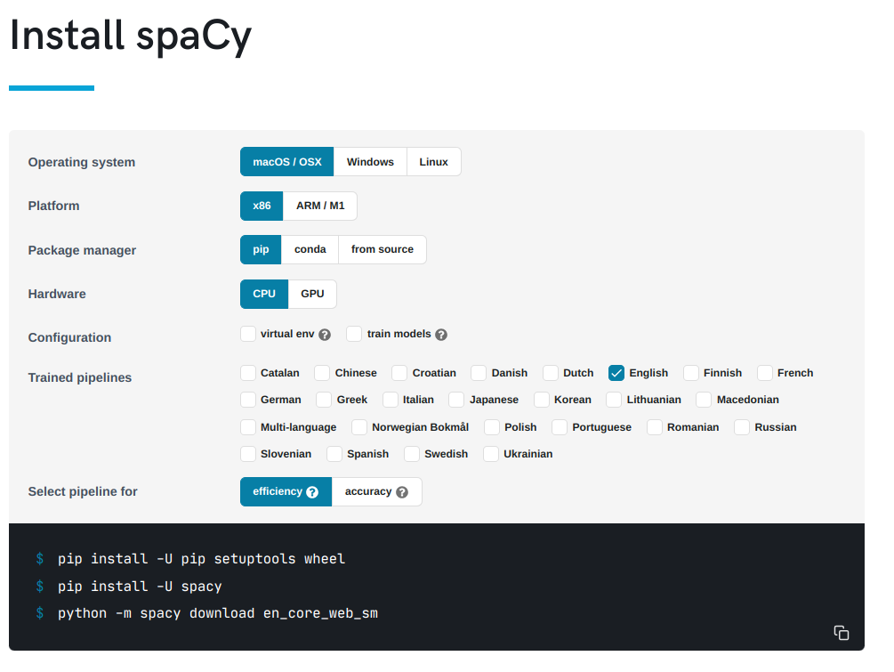

Lab 4 - Geoparsing#
Th. 24.10.2024 15:00-17:00
1 - Installation#
The installation instructions below are attached if you would like to install new packages locally on your computers. These packages have already been installed on JupyterHub.
1.1 - Wikipedia#
Wikipedia is a free online encyclopedia, created and edited by volunteers around the world and hosted by the Wikimedia Foundation. We can install a python package, also called Wikipedia, that can access and parse data from Wikipedia.

Type the following command for installation:
conda install wikipedia
1.2 - spaCy#
Next we can install spaCy and the small version of an English trained pipeline. You can find out the installation instructions from here. 
If conda installation does not work, try to use pip installation as follows.
pip install -U pip setuptools wheel
pip install -U spacy
python -m spacy download en_core_web_sm
Then, import wikipedia and spacy to check whether they have been successfully installed.
import wikipedia
import spacy
As the trained English pipeline is installed as a Python package, there are two ways to load it.
nlp = spacy.load("en_core_web_sm")
Or you can…
import en_core_web_sm
nlp = en_core_web_sm.load()
2 - Getting to Know Athens on Wikipedia#
In this section we will first retrieve a Wikipedia article summary about Athens, Greece. Then, we will perform preprocessing (e.g., data cleaning) on the retrieve text. For instance, we can replace \n (that indicates a new line) with an empty string.
summary = wikipedia.summary("Athens")
summary = summary.replace('\n','') ## Feel free to comment this line of code to see the difference after data cleaning
summary
3 - Geoparsing on the Athens summary#
3.1 - Named Entity Recognition (NER)#
Next, we will use the language model to perform named entity recognition.
A named entity is a “real-world object” that’s assigned a name – for example, a person, a country, a product or a book title. spaCy can recognize various types of named entities in a document, by asking the model for a prediction. Because models are statistical and strongly depend on the examples they were trained on, this doesn’t always work perfectly and might need some tuning later, depending on your use case. Named entities are available as the ents property of a Doc. (See spaCy’s Named Entity Recognition)
doc = nlp(summary)
ents = [(e.text, e.start_char, e.end_char, e.label_) for e in doc.ents]
## start_char and end_char are the indices of the 'text' appearing in the document
## label_ is the entity type of the 'text'
## Here we use list comprehension (See https://www.w3schools.com/python/python_lists_comprehension.asp).
print(ents)
3.2 - Visualizing NER Results#
You can also use the built-in displaCy visualizer to highlight the detected entities and their types in your Jupyter notebook.
from spacy import displacy
displacy.render(doc, style="ent")
3.3 - Extracting Geographic Entities#
However, what do these entity labels mean? To answer this question, we can use spacy.explain, a built-in function to get descriptions about an entity type.
## use set() to get a set from the list of retrieved entity types
entity_type_set = set([ent[3] for ent in ents])
## then tranform the set to a list again for further analysis
entity_type_list = list(entity_type_set)
[(entity_type, spacy.explain(entity_type)) for entity_type in entity_type_list]
Assume now we define entities with the type of ‘GPE’, ‘LOC’, ‘ORG’, or ‘NORP’, as geographic entities. Then, we can further extract them.
entity_type_list_selected = ['LOC','ORG','GPE','NORP']
geo_ents = [ent for ent in ents if ent[3] in entity_type_list_selected]
geo_ents
3.4 - Geoparsing Performance Evaluation#
spaCy does a great job in geoparsing at first glance. However, there are a few entities that it mistook for geographic entities. For instance, ‘BC’ and ‘the Classical Era’ are not ‘ORG’. Therefore, the rest of the model outputs are the true positives. We can then compute Precision based on the comparison between the true positives we identified and the model outputs.
precision = (len(geo_ents)-2)/len(geo_ents)
precision
Your turn: Assuming now you are going to compute Recall and F1 score next, you will need to find out all correct place names identified by humans. Look at the retrieved Wikipedia article again. Find out these place names for the computation as follows.
num = # Fill out the number of correct place names you identified
recall = (len(geo_ents)-2)/(num)
recall
After your compute your Recall, you can compute F1 score below.
f1 = 2/(1/recall+1/precision)
f1
4 - Submission#
Try the code blocks above, retrieve a Wikipedia article summary about a different place of you interest, geoparse the text and do a simple evaluation. Lastly, submit the .ipynb file on Moodle.
You are also encouraged to retrieve Wikipedia article summaries in a different language. For instance, you can run the following code to switch language to French:
wikipedia.set_lang("fr")
If you select a different lanauge for text retrieval, you will also need to download a corresponding trained pipeline. For instance, install a French pipeline with the command:
python -m spacy download fr_core_news_sm